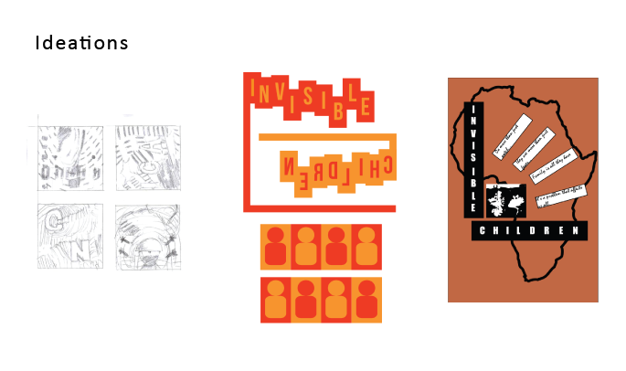

Type
School project
Role
Graphic Artist
Software

Team
Felipe Andres
Kevin Truong
Objective
Design a poster to raise awareness about an issue.
Process
Various iterations of hand drawn and digital sketches were developed by each team member prior to creating the final outcome of the poster. The print was designed based on the style of the graphic designer Nicklaus Troxler in the Postmodern era. The target of this poster is to raise awareness of child soldiers, where I produced the final graphical illustrations in terms of the use of typography, colour palette and placement of objects.
- 

Result
By having low competency in Adobe Illustrator at the start, I have obtained a good grasp of the software after a 1 week project by using special tools offered such as “write on path.” Also, positive comments were received from the TA that the simplistic poster captures a meaningful sense of communication and should be send to the organization “Invisible Children” to be published in public.